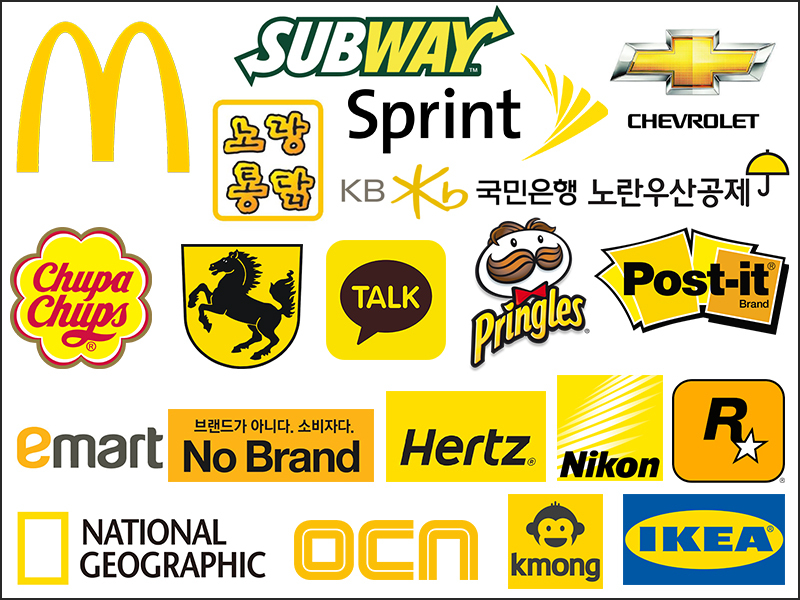

밝은 노란색Bright Yellow
노란색이 주는 느낌
마음을 맑게 하는 데 좋은 색
어린이(청소년)을 대표하는 색
에너지를 상징하는 색
긍정적인 느낌과 낙천적인 느낌을 안겨주는 색
긍정적 의미
빛, 즐거움, 생명, 소망, 행복, 자신감, 긍정적, 낙천적, 유쾌, 명랑, 환희, 희망, 광명, 팽창, 현대, 미래, 태양, 이해, 풍부함, 부유함, 창조성, 봄, 꽃, 젊음, 어린이, 병아리, 황금, 금발, 민들레, 해바라기
부정적 의미
경고, 팽창, 시기, 질투, 거짓, 미혼모, 짜증, 불결, 불안, 우울, 조바심, 금지선, 추월선, 신경제, 염증, 공사 주의 표시, 배반
어울리는 색(보색)
남색
보라색
심리적 의미
노란색은 먼거리에서도 가장 눈에 띠는 밝은 색입니다. 이렇게 밝은 노랑을 좋아하는 사람은 대체적으로 자신의 밝은 부분을 마음껏 표현하고 싶어 하는 성향이 많습니다. 자신감이 있고 희망으로 가득 찬 긍정적인 상태라고 말합니다. 반면 항상 노란색을 원하게 된다면, 특정한 대상에게 관심과 주목받고 싶은 성향이 있습니다.
※ 노란색을 기피하게 되는 심리는 대체적으로 유치한것을 싫어하는 성향에게 나타나게 됩니다. 밝은 느낌인 만큼 침착하고 차분한 이미지보다 소란스럽고 유치한 느낌이 들기 때문입니다. 그리고 성숙함을 표현하는 부분이랑은 거리가 있어서 어린 마음을 인정하기 싫을 때 나타나기도 합니다.
브랜드적용
